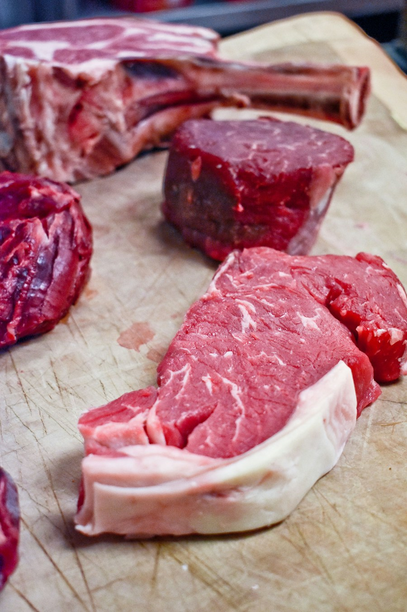
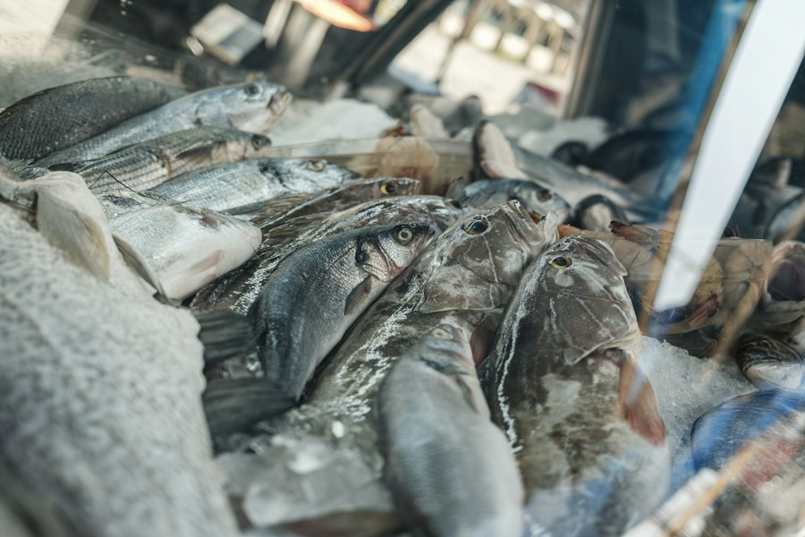
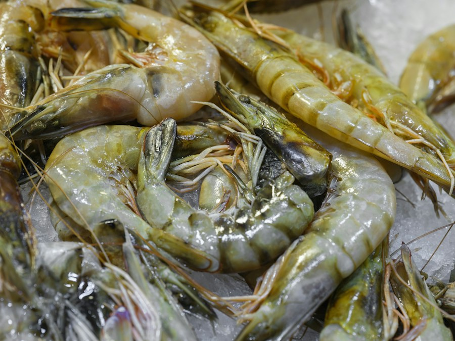
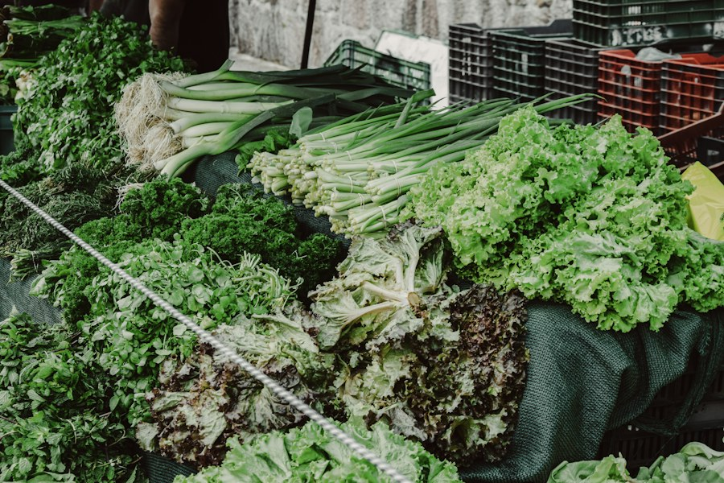

.png)
MÀU SẮC KỂ CÂU CHUYỆN
Theo dõi cả hành trình, không chỉ một thời điểm
Trong chuỗi cung ứng lạnh, thực phẩm có thể trải qua nhiều lần giao nhận, lưu kho và trưng bày. Tem đổi màu giúp bổ sung một tín hiệu dễ quan sát về lịch sử thời gian và nhiệt độ mà sản phẩm đã trải qua.
Màu chỉ báo cần được đọc cùng hướng dẫn sử dụng, thông tin bảo quản và quy trình kiểm soát chất lượng của từng đơn vị. Mỗi ứng dụng nên được tư vấn để phù hợp với loại thực phẩm và hành trình thực tế.
Khả năng áp dụng (Application)
FreshTag có thể được tư vấn cho nhiều nhóm thực phẩm tươi sống

Thịt
Thịt bò, heo, gà

Cá
Cá tươi, phi lê

Hải sản
Tôm, mực, cua

Rau củ
Rau hữu cơ, củ quả
Ứng dụng thực tế cần được lựa chọn theo loại thực phẩm, bao bì và điều kiện bảo quản. Tem hỗ trợ theo dõi, không thay thế quy trình kiểm tra chất lượng.
DỄ NHẬN BIẾT, DỄ ĐƯA VÀO QUY TRÌNH
Từ tem chỉ báo đến hành động phù hợp
- Chọn điểm theo dõiXác định loại thực phẩm, bao bì và chặng cần giám sát.
- Đọc trạng thái màuQuan sát chỉ báo theo hướng dẫn tương ứng với cấu hình tem.
- Kiểm tra và ghi nhậnĐối chiếu quy trình nội bộ để quyết định bước xử lý tiếp theo.
Dễ quan sát
Màu sắc trực quan giúp nhân viên nhận biết lô hàng cần chú ý ngay tại điểm kiểm tra.
Theo dõi liên tục
Ghi nhận tác động tích lũy của thời gian và nhiệt độ trong hành trình bảo quản.
Thiết kế theo ứng dụng
Cấu hình tem có thể được tư vấn theo sản phẩm, bao bì và mục tiêu theo dõi.
BẮT ĐẦU TRAO ĐỔI
Tìm hiểu ứng dụng phù hợp cho sản phẩm của bạn
Chia sẻ loại thực phẩm, điều kiện bảo quản và hành trình phân phối để đội ngũ FreshTag tư vấn bước tiếp theo.